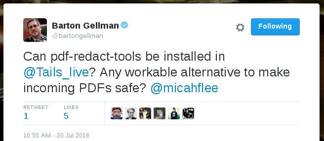
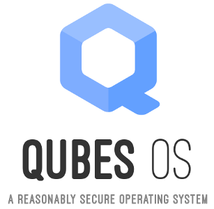

Tag: qubes

Qube Apps: a Flatpak-based app store for each qube
I really like Qubes but I haven't been using it a lot lately. I have a Qubes laptop that I use for specific high security tasks, but my daily driver the last few months has been Ubuntu or Pop!_OS (I really like the tiling windows and the design), and sometimes macOS. Qubes is great, but it can be cumbersome to use.

Problematic behavior from the Whonix project
The first sign that something weird was going on with the Whonix project -- software, which is integrated into the Qubes operating system, that allows you to run anonymous VMs that force all your internet traffic through the Tor network, run primarily by Patrick Schleizer -- was in September 2018 when the project's official Twitter account tweeted, "We miss Jacob Appelbaum."

Using Mullvad VPN in Qubes
A friend wanted my help configuring Mullvad VPN on their Qubes computer. Instead of just helping them, I decided to write a quick blog post explaining how I normally set up VPNs in Qubes. There are many different ways -- Mullvad even has its own Qubes guide -- but I prefer using NetworkManager system tray applets, so I can always see if my VPN is connected or not. I also use a simple script that I set to run when my AppVM boots to automatically connect to the VPN, and reconnect if it disconnects, and Qubes firewall rules to prevent non-VPN internet traffic from sneaking by.

Breaking the Security Model of Subgraph OS
I recently traveled to Amsterdam to attend a meeting with Tor Project staff, volunteers, and other members of the wider Tor community. Before trips like this, I prepare a separate travel computer, only bringing with me data and credentials that I might need during my trip. My primary laptop runs Qubes, but this time I decided to install Subgraph OS on my travel laptop. I had only briefly messed with it before, and there’s no better way to learn about a new operating system than by forcing yourself to actually use it for a few days.
Subgraph OS is an “adversary resistant computing platform.” It’s similar to Tails in that it’s based on Debian and all traffic is forced through Tor (that’s changing though: there’s now basic support for clearnet Chromium and OpenVPN). It uses a grsecurity Linux kernel, and many apps run in “oz sandboxes”, a homebrew sandbox solution that protects you even if an attacker manages to exploit a bug in one of these apps. Subgraph OS also includes the Subgraph Firewall, an application firewall similar to Little Snitch for macOS — something that’s pretty awesome, and hasn’t really existed in the Linux ecosystem before. Basically, it’s designed to be an easy-to-use Linux distro that’s extremely secure.

Qubes Tip: Making Yubikey OpenPGP smart cards slightly more usable
Qubes 3.2 has support for USB passthrough. This one feature has made Qubes so much more useful for me. It means that a wide variety of devices — from my laptop’s internal webcam, to plugging in smartphones to transfer data or do Android development — are finally supported. I used to have to use a separate non-Qubes computer for several tasks that I can now more conveniently and securely do within Qubes.

How Qubes makes handling PDFs way safer
Bart Gellman asked me on Twitter how to make PDFs safe to open. This is an excellent question, especially for a Pulitzer-winning surveillance/national security reporter who needs to open documents from random people on the internet, who may be trying to hack him or may be a valuable new source. PDFs, and all other document formats, can be terribly dangerous, and opening a malicious one can let an attacker take over your computer.
He was specifically asking if PDF Redact Tools, a tool that I developed to securely redact documents, could be used in Tails to safely sanitize potentially-malicious PDFs before opening them. Yes you can, but Qubes offers some built-in tools that do a better job of this, in a safer manner, with less hassle, and that’s quicker and easier.
Qubes Tip: Opening links in your preferred AppVM
If you use Qubes like I do, you have many different AppVMs to compartmentalize different programs. You might have one VM for your email client, one for your jabber client, one for your password database. But if you click a link in any of these programs, it sure would be nice if that link opened in the browser VM of your choice. This isn’t all that hard to setup.
Using Tor Browser Launcher in Qubes
I maintain a piece of software called Tor Browser Launcher. It takes care of downloading Tor Browser Bundle for you, verifying the gpg signature, making sure you’re always using the latest version of Tor Browser, and making it easier to launch.
I originally only made Tor Browser Launcher work in Debian-based distributions, but since the default templates in Qubes are based on Fedora, I recently ported it to RPM-based distributions as well. Here’s how to set it up.
Dual-booting Qubes and Ubuntu with Encrypted Disks
Qubes is my preferred operating system, but occasionally you need to run something else. It’s hard to get certain hardware working the way you expect in Qubes, like webcams or non-disk USB devices. And Qubes VMs don’t support 3D acceleration, which you might occasionally need. You also can’t run VirtualBox inside of Qubes. You normally don’t have any reason to do this, except for very specific cases, like software development with Vagrant.
So here are instructions for how to dual-boot Qubes R2 rc1 and Ubuntu 14.04 LTS, using disk encryption for both. You should be able to adopt this same technique to dual-boot pretty much any two GNU/Linux distros with disk encryption. Keep in mind that if you’re booted into Ubuntu and you get owned, it’s possible for the attacker to then compromise Qubes. (You have to get really, really, really owned for an attacker who compromised Qubes to then compromise Ubuntu.)

The Operating System That Can Protect You Even if You Get Hacked
This was originally published on the Freedom of the Press Foundation’s blog.
We wrote about the importance of the Tails operating system to all of the NSA journalists last week, but there’s also another little-known operating system that journalists should consider using if they find themselves in high-risk scenarios. It’s called Qubes.
I’ve only been using Qubes for a few weeks, but I feel like my operating system is now a digital fortress. Let me try to explain why, and how Qubes differs from Tails.